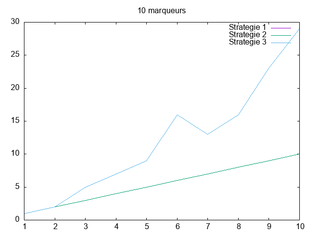

Experimentateur¶
Etat du TP¶
Date : 05 / 02 / 2021
Les deux premieres stratégies ont bien été implantées.
Les réponses aux questions ont été faites, sauf la question Question1.3.2 ou on n’arrive pas à déterminer le pire des cas de l’algorithme de tri.
Réponses aux questions¶
1.2 Stratégie 1 :¶
Réponses aux questions concernant la stratégie 1.
Question 1.2.1 :¶
L’implantation de l’algorithme a bien été faite.
Question 1.2.2 :¶
Pour étudier la complexité de cet algorithme, il est judicieux de compter le nombre d’opérations de comparaisons, OP = comparaison.
Question 1.2.3 :¶
Non, il n’existe pas de pire ou un meilleur des cas pour cet algorithme.
Pour les marqueurs négatifs :
On effectue toujours (m - p) * p comparaisons. En effet pour chaque marqueur négatif, en question on a (m - p) et ces derniers seront comparer à tous les marqueurs positifs, on aura donc (m - p) * p comparaisons.
Pour les marqueurs positifs :
Pour les marqueurs positifs, on effectue ((p + 1)*p) / 2 comparaisons.
- En effet, pour tout marqueur positif il sera comparer exactement soit :
à un seul element de la liste positive, si l’élément à l’indice 0 de liste positive est bien ce marqueur positif.
à 2 éléments de la liste positive, si l’élément à l’indice 1 de liste positive est bien ce marqueur positif.
à 3 éléments de la liste positive, si l’élément à l’indice 2 de liste positive est bien ce marqueur positif.
…
…
…
à tous les éléments p de la liste positive , si l’élément à l’indice p-1 de liste positive est bien ce marqueur positif.
Question 1.2.4 :¶
Le nombre exact d’opérations OP en fonction de m et p est :
c1(m,p) = (m - p) * p + ((p + 1)*p)/2.
1.3. Stratégie 2 :¶
Réponses aux questions concernant la stratégie 2.
Question 1.3.1 :¶
L’implantation de l’algorithme a bien été faite.
Question 1.3.2 :¶
Oui, il existe un pire des cas.
En effet, le nombre de comparaisons dépend bel et bien de l’algorithme de la recherche dichotomique qu’a un nombre de comparaisons qu’est fixe dans tous les cas, mais en revanche l’algorithme de tri a bien un pire des cas en l’occurence celui.
Le nombre de comparaisons dépend bel et bien de la fonction dicho_search(markers, positive) et de la fonction de tri merge_sort(positive,compare).
Le nombre exact d’opérations OP en fonction de m et p est :
c2(m,p) = m * c(dicho_search(markers, positive)) + c(merge_sort(positive,compare))
c2(m,p) = m * log2(p) + c(merge_sort(positive,compare))
1.4. Stratégie 3 :¶
Réponses aux questions concernant la stratégie 3.
Question 1.4.1 :¶
L’implantation de l’algorithme a bien été faite.
Question 1.4.2 :¶
Oui, il existe un pire des cas.
Pour le tri de la liste positive et markers :
Le pire des cas correspond à celui où à chaque appel récursif, la fusion demande le maximum de comparaisons, à savoir celui où les éléments de la liste triée finale proviennent alternativement des deux sous-listes triées. (wikipédia)
Pour la recherche des marqueurs positif dans markers :
Cela correspond au cas ou les p éléments de la liste positive sont les p derniers éléments de la liste triée markers.
Dans le pire des cas pour chacun des (m - p) marqueurs négatifs on fait la recherche dichotomique sur toute la liste positive, on a donc :
(m - p) * c(dicho_search(positive, markers))
Pour les marqueurs positifs dans la liste markers, la recherche dichotomique se fait sur une partie de liste positive, selon l’indice de de chaque marqueur :
pour le premier marqueur positive P(0) on a : c(dicho_search(positive, P(0)))
pour le deuxieme marqueur positive P(2) on a : c(dicho_search(positive, P(2)))
…
…
…
pour le dernier marqueur positive P(P-1) on a : c(dicho_search(positive, P(P-1)))
On a donc :
c3(m, p) = (m-p) * c(dicho_search(markers, positive))+ ∑ (i=0 jusqu’a p-1) c(dicho_search(markers, positive)) + c(tri_fusion(p)) + c(tri_fusion(m))
= m * c(dicho_search(markers, positive)) + c(tri_fusion(p)) + c(tri_fusion(m))
= m * (1 + ⌈log2(p)⌉) + p * ⌈log2(p)⌉ + m * ⌈log2(m)⌉
c3(m, p) = m * (1 + ⌈log2(m)⌉) + (m+p) * ⌈log2(p)⌉
1.5. Recherche empirique des cas favorables :¶
Question 1.5.1 :¶
Pour m = 10, p = 10, on voit bien que les deux stratégies 1 et 2 sont à peu prés de même ordre, mais pour m = 60 et p = 30 par exemple la stratégie 2 est beaucoup plus intéressante que la stratégie 1.
En ce qui concerne la stratégie 3, elle ne sera plus performante que dans le cas ou la liste markers et positive sont déja triées et à condition que les p éléments de la liste positive sont les p premiers éléments de la liste triée markers.
Question 1.5.2 :¶
Pour m = 10 :
Pour m = 20 :
Pour m = 30 :

Pour m = 40 :
Pour m = 50 :
Pour m = 60 :
Pour m = 70 :
Pour m = 80 :
Pour m = 90 :
Pour m = 100 :
Pour des listes de taille supérieur assez importante, on remarque que la stratégie 2 est plus performante.
Conclusion¶
Trier des listes (une structure de données en général) afin d’éffectuer une recherche peut être permettre d’aller plus vite dans la recherche, mais il faut prendre en compte le coup du tri de cette structure de données.